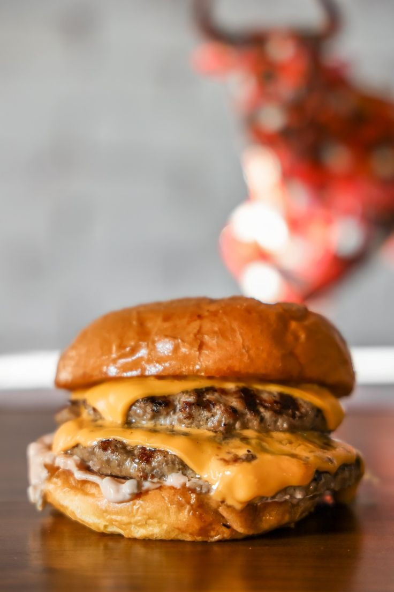

Burger

Burger recipe
To make delicious cheeseburgers, preheat your grill or skillet over medium-high heat. Season 1 lb of ground beef with
1 tsp salt and ½ tsp black pepper, then shape into 4 patties. Cook the patties for 4-5 minutes per side, or until they
reach your desired doneness, adding a slice of cheddar cheese to each patty during the last minute of cooking. While
the patties cook, lightly toast 4 hamburger buns in a pan or on the grill. Assemble the burgers by placing the cooked
patties on the bottom half of each bun, then top with lettuce leaves, tomato slices, pickles, and any desired condiments
like ketchup and mustard. Cover with the top half of the bun, serve, and enjoy your homemade cheeseburgers!
Ingredients
- beef
- salt
- black pepper
- buns
- cheese
- olive oil
- ketchup
- Lettuce leaves
- pickles
- tomato slices
Steps
- Preheat your grill or skillet over medium-high heat.
- Season the ground beef with salt and pepper, then shape into 4 patties.
- Cook the patties on the grill or skillet for about 4-5 minutes per side, or until they reach your desired level of doneness. Add a slice of cheese to each patty during the last minute of cooking.
- While the patties are cooking, lightly toast the hamburger buns in a separate pan or on the grill.
- Assemble the burgers by placing the cooked patties on the bottom half of each bun. Top with lettuce, tomato slices, pickles, and any condiments you like.
- Cover with the top half of the bun, serve, and enjoy your homemade cheeseburgers!